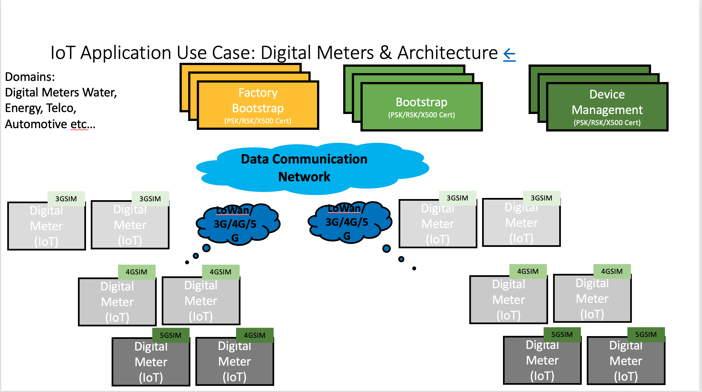
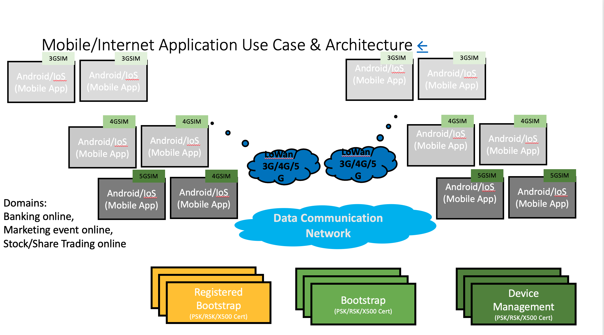

leshan Application / Iot Application / Mobile Application Skill (draft)
May 22, 2023
Use Cases #
Here are the summary of the solution and standards for CoAP, LwM2M and IPSO:
Solution & Standard to Support CoAP #
Device and Protocol to work in a constraint environment – CoAP Constraint of Application Protocol Protocol operates s constraint resources, e.g. Power devices run using battery or Transmit data in an Intermittent and narrow band. CoAP protocol is a Restful-like API with Restful response code Operate in various protocol stacks, UDP/DTLS, TCP/TLS and Websocket, SMS and MQTT Message encodes/decoded and transported between devices using CBOR Concise Binary Object, Text, TLV, JSON
Solution and Standard to support LwM2M #
Device Communication with its Management System – LwM2M Lightweight Machine to Machine Protocol – engineered on the “wisdom” of machine to machine interface Device authentication with Bootstrap without Security and with Security PSK, RSK, X500 Self-Signed and X500 Certificate Device authorisation with Registration and regular Registration Update Device maintenance Firmware/Software Upgrade Device configuration with Device Management and Service Enablement with Read, Read/Write, Execute
Solution & Standard to support Data/Business Logic Modelling #
Device Resource/Data Model with IPSO Internet Protocol Smart Object OMA Open Mobile Alliance provide a registration framework to allow all industry sectors, Energy, Telco, Mobile and Internet
- To perform Data/Information Model using Device Management/Service Enablement and Report Notification Hypotheses into Use Cases
For IoT Application Domain: IoT Use Case #

Digital Meters of Water, Power, Gas, Electricity (measurement data), Automotive (measurement with CAN bus, Tracking with GPS) Cargo container tracking on land, on sea, and in the air We hypothesize on a solution to develop Firmware Application running in the e.g. Arm Core ( CPUs A-Core or M-Core
For Mobile Application Domain: Mobile Use Case (Mobile Application)→ #

Banking, Stock Market domains (leverage on the authentication with security enabling and report notification in real time to inform user) We hypothesize on a solution to develop Mobile Application running Mobile devices e.g. Android/Apple phones and tablets